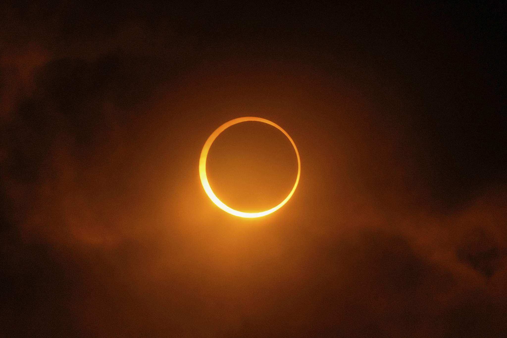

Солнечное затмение
1. Как выглядит
Луна постепенно закрывает солнечный круг, начиная с правого или левого края. Затенённая часть Луны становится видна благодаря слабому пепельному свету — отражению Земли. За несколько минут до полного закрытия на земле возникают бегущие тени, а небо приобретает тёмно-фиолетовый оттенок. В момент полной фазы солнечное свечение полностью пропадает, и становится видна наружная оболочка Солнца — жемчужно-белое сияние с розоватыми выступами. Вокруг чёрного круга Луны загорается тонкое огненное кольцо, если затмение кольцеобразное.
2. История обнаружения и наблюдений
Самая древняя запись найдена в китайских летописях (примерно 2137 год до нашей эры): придворные звездочёты Хи и Хо не предсказали затмение и были казнены. В 585 году до нашей эры греческий мыслитель Фалес Милетский предсказал затмение, которое остановило битву между лидийцами и мидянами — они приняли это за знак богов. В 1919 году учёный Артур Эддингтон, изучая затмение, измерил, как звёзды меняют своё кажущееся положение из-за притяжения Солнца. Это подтвердило теорию Альберта Эйнштейна об искривлении пространства и времени.
3. Природа явления
Луна располагается ровно между Землёй и Солнцем в тот момент, когда наступает новолуние. Спутник заслоняет собой дневное светило. Видимые размеры Луны и Солнца с земной поверхности почти совпадают, поэтому закрытие получается точным. Если бы Луна была чуть дальше, мы бы видели только кольцо без полной тьмы.
4. Связь с культурой и мифами
Скандинавы верили, что солнце проглатывают два волка — Сколь и Хати. У древних славян существовало поверье о змее или чудовище, пожирающем светило. В Китае считали, что небесный дракон нападает на солнце. Многие народы громко били в барабаны, стреляли из луков и кричали, чтобы отпугнуть чудовище и вернуть свет.
5. Условия для наблюдения
Наблюдатель должен находиться внутри узкой полосы полной фазы — её ширина составляет не более 200–250 километров. За пределами этой полосы видно только частичное затмение. Требуется ясное небо без облаков и открытое место вдали от города. Запрещено смотреть на Солнце без защиты — необходимы затемняющая пленка или специальные очки, иначе можно навсегда потерять зрение.
6. Редкость и периодичность
В одной и той же точке Земли полное солнечное затмение происходит в среднем раз в 300–400 лет. Зато в целом по планете они случаются примерно раз в полтора года. Затмения связаны в повторяющиеся серии длиной 18 лет — этот круг носит название Сароса. После завершения одного круга похожие затмения начинаются снова, но уже в другом месте Земли.
